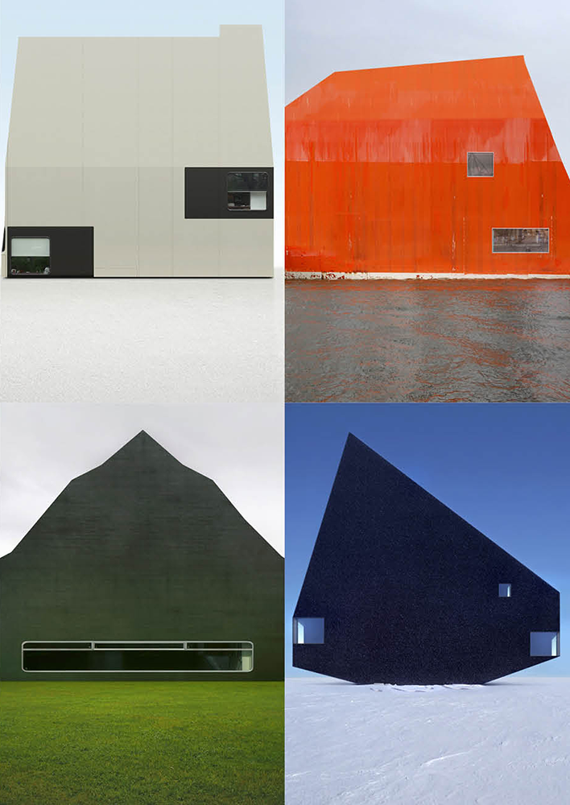
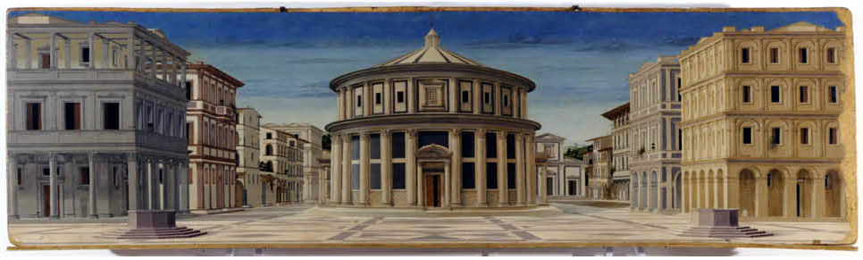
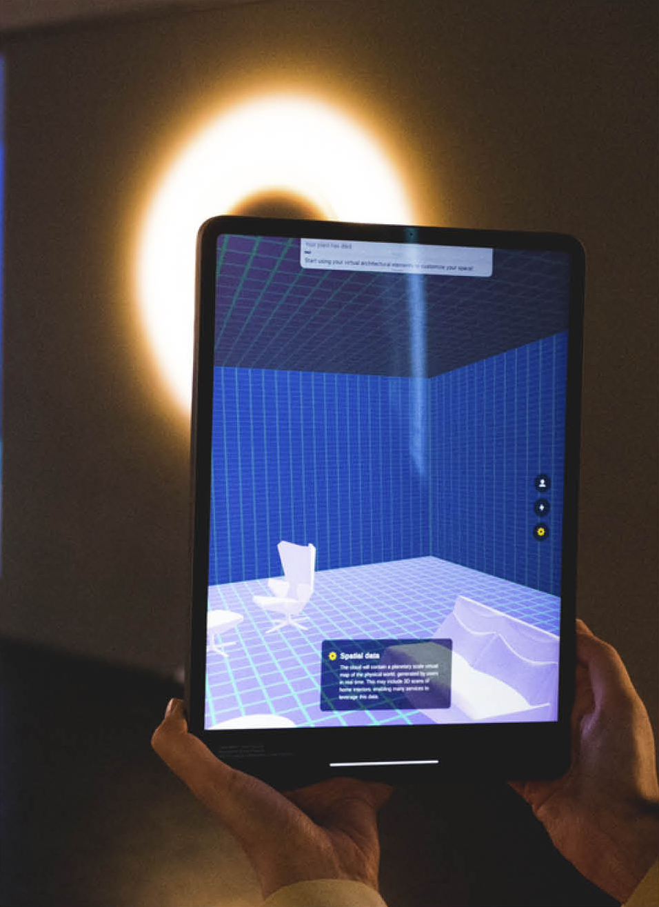
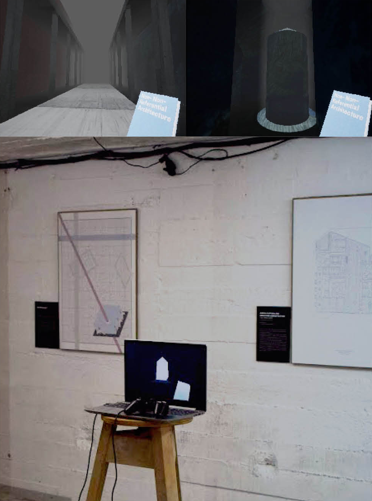
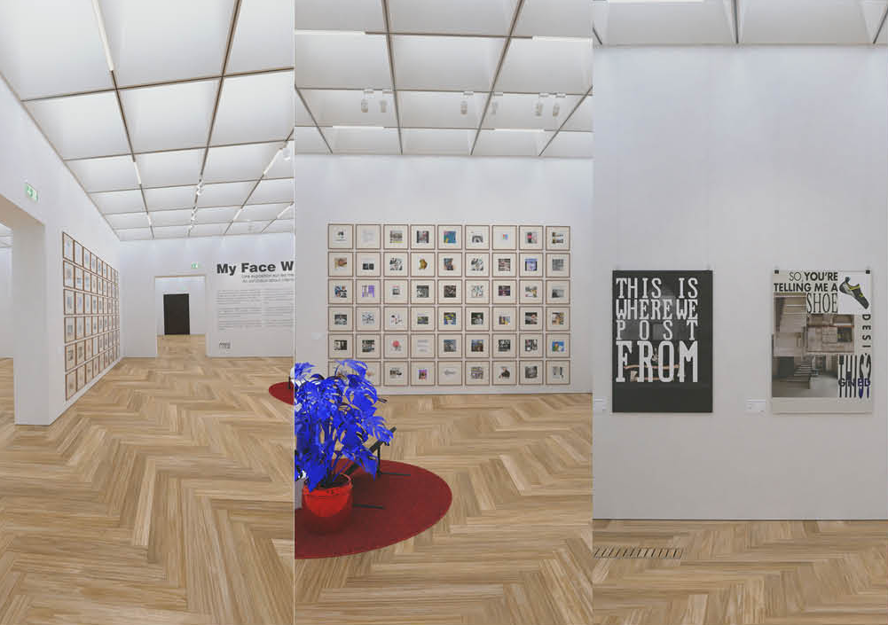

Architecture comme média
Basile Sordet
Club ASAP 02
mai 2023
Temps de lecture : 5 min
Contexte
Victor Hugo publie en 1832 dans le cinquième livre de Notre Dame de Paris le second chapitre "Ceci Tuera Cela", dans lequel on peut lire la célèbre citation "Le livre va tuer l'édifice.". Il fait état d'une grande réalisation de l'époque : l'imprimerie remplacera l'architecture en tant que vecteur d'idée.
Deux siècles plus tard, avec la démocratisation des outils numériques et le développement d'internet, c'est l'image qui paraît être la meilleure candidate pour reprendre ce rôle, grâce à sa disponibilité et son omniprésence sur les réseaux
Image et Architecture

Dans le travail "Bildbauten" réalisé par l'artiste et architecte Philipp Schaerer entre 2007 et 2009, il étudie la capacité qu'a l'architecture fictionnelle, notamment celle dont l'image est créée numériquement, à se confondre avec la réalité.
Ainsi une piste de réflexion sur la relation qu'entretient un bâtiment, et donc son image, avec l'idée qu'il incarne est semble-t-il engagée.
La démocratisation des intelligences artificielles (IA) met en lumière de nouveaux outils conceptuels comme le prompt. Le prompt désigne le texte qui est entré par un utilisateur afin que l'IA génère une image.
Ainsi l'image est désormais le résultat direct d'un prompt, autrement dit d'une idée. Elle se confond avec cette dernière.
Idéal vs Virtuel

On peut considérer la valeur qu'a l'image d'un bâtiment à être vecteur d'idée ou idéal : "Qui n'a qu'une existence intellectuelle, [...] qui a les caractéristiques de l'idée."*
On peut l'opposer à une image d'un bâtiment qui serait virtuel c'est à dire : "Qui est à l'état de simple possibilité ou d'éventualité"**
La Cité Idéale d'Urbino peinte en 1480 pourrait alors devenir une cité virtuelle. Elle ne serait alors plus une simple expérience intellectuelle abstraite mais bien une projection d'un futur possible et désirable.
* & ** Définitions du cnrtl
Intentions d'Architectures Virtuelles
Réalité augmentée

La réalité augmentée est l'intégration d'éléments virtuels dans la réalité physique. Dans l'installation de l'architecte Lucia Tahan "Cloud Housing" réalisée en 2019, une pièce est scannée en 3D. Celle-ci constitue un double numérique visible à travers un smartphone ou une tablette, à la manière d'une vidéo prise en live avec cet appareil.
Est alors imaginé un faux système publicitaire : des ballons gonflables couverts de logo de marques qui saturent la pièce. Ceux-ci n'existent que dans l'espace virtuel de la chambre affiché sur la tablette. Pourtant ils induisent un malaise bien réel dans l'esprit de l'utilisateur.ice : La possibilité que son espace physique se retrouve saturé de ballons publicictaires dans un futur potentiel se réalise dans cet espace virtuel.
Réalité virtuelle
La réalité virtuelle est l'intégration de sensations physiques réelles dans un monde virtuel. En 2017, la société iVeneration propose sur le marché une prestation de cimetière en réalité virtuelle pour pallier au manque de places dans les cimetières de Hong-Kong.
Elle propose à ses utisitaeur.ice.s un lieu de recueillement, au choix dans une Hong-Kong virtuelle. Des tombes personnalisables permettent aux familles d'identifier le lieu comme une véritable sépulture. Les sensations physiques liées au casque de réalité virtuelle créent la possiblité d'expérimenter une réaction émotionnelle forte dans ce lieu qui n'existe que virtuellement.
Les cités virtuelles
Outre les espaces virtuels perceptibles au travers d'interfaces mobiles répliquant elles-mêmes des sensations physiques, il existe des espaces virtuels qui ne s'expérimente que par des interfaces immobiles. Ces espaces sont également tridimensionnels, mais le point de vue par lequel il nous est possible de les comprendre ne dispose pas du même niveau de subjectivité.
Les possibilités qu'offrent ces espaces sont les interactions qu'ont les usager.ère.s entre elles.eux et celles qu'ils.elles ont avec leur environnement. Ces espaces ont généralement pour vocation de créer des zones fonctionnelles, esthétiques et émotionnelles qui sont propices aux interactions.
Caractéristiques de l'architecture virtucelle
Un point commun existant entre les divers exemples vus précédemment ainsi que pour d'autres formes possibles d'architectures virtuelles peut-être trouvé.
Cet élément pourrait se définir comme l'immersivité du média dans lequel on retrouve ces architectures. Autrement dit, il s'agit de la capacité qu'a un média à réaliser dans l'esprit de son.sa utilisateur.ice une projection de celui.celle-ci dans l'espace donné.
Immersivité
L'immersivité d'un média dépend des outils qu'il a à sa disposition pour transmettre de façon convainquante aux utilisateur.ice.s les possiblités pouvant se réaliser dans un espace donné.
Par exemple, un dispositif de réalité virtuelle, en tirant parti des sensations physiques dont l'usager.ère fait l'expérience, n'a pas besoin de produire d'éléments de qualité 'photo-réaliste' pour paraître immersif. Ceci à l'inverse de l'image d'architecture de synthèse qui, imprimé ou généralement visible sur un écran, ne dispose pas d'un rapport au corps aussi privilégié
Les médias sont donc limités par les propriétés techniques qui le définissent créant souvent le besoin de faire un compromis entre réalisme et sensations.
Explorations Personnelles
Virtuel et Idéal

"Architecture Non-non-référentielle" est un walking simulator dans lequel le.la joueur.se est invité.e à explorer un projet d'architecture dont le plan a été généré par une IA avec comme prompt "Un plan dessiné par Valerio Olgiati". Il a été produit suite à une relecture critique de son manifeste "Architecture Non-Référentielle
Le projet est alors idéal car il n'est généré que par une seule idée. En revanche, l'espace est quand à lui virtuel car il possède un certain degré d'immersivité : On en fait l'expérience au travers d'un jeu de Playstation 2, mimant le réalisme et les sensations qui y sont liés. Ainsi l'imitation de codes liés au média, aide à l'immersion des joueurs.se.s qui les comprennent, facilitant la projection dans l'espace par ceux.celles-ci.
Limites et possibilités
Si la réalité virtuelle est immersive car elle possède une grande capacité de transmitions de sensations, elle reste néanmoins peu démocratisée car elle nécessite un dispositif onéreux. Se pose alors la question d'un média accessible par le plus grand nombre, dont il faut imaginer une immersivité facilitée.
Est alors imaginé un projet de page instagram, se faisant l'interface de communication d'un musée virtuel. Il s'agit de la MARGO
Par le réemploi des codes utilisés dans les stratégies de communication des musées traditionnels, du contenu photo-réaliste imitant des prises de vues au smartphone cherche à génerer une immersivité pour la personne qui se hasarde sur la page de ce musée virtuel. Il lui fait croire qu'il s'agit d'une institution qui dispose de locaux physiques, lui attribuant une certaine crédibilité
L'objectif est de pouvoir ainsi promouvoir du contenu virtuel, tout en le légitimant par une sensation d'existence physique ; une personne qui like et commente les publications d'un musée sur instagram le fait de la même manière qu'ils s'agisse d'un musée virtuel ou non.

Apparition d'un.e Architecte virtuel.le
Ainsi, l'existence apparente des espaces virtuels soulève plusieurs questions :
Quelles sont les qualités de ces espaces ?
Quel serait l'impact maximum que pourraient avoir ces espaces sur leurs usager.ère.s ?
Quelles sont les limites des ressources à disposition pour la création de ces espaces ?
La création de ces espaces implique-t-elle la formation d'architectes spécialistes du virtuel; allons-nous voir apparaître des architectes virtuel.le.s ?
L'ensemble des articles issus du club asap 02 sont disponibles ci-dessous:
| # | Titre | Auteur | |
|---|---|---|---|
| 200 | Import = Apport ? | ASAP | Club #02 |
| 201 | Psychopathologie de la ville quotidienne | Cristiano Gerardi | Club #02 |
| 202 | De la pratique | Clarisse Protat | Club #02 |
| 203 | Architecture comme média | Basile Sordet | Club #02 |
| 204 | Le droit de citer | Hugo Forté | Club #02 |